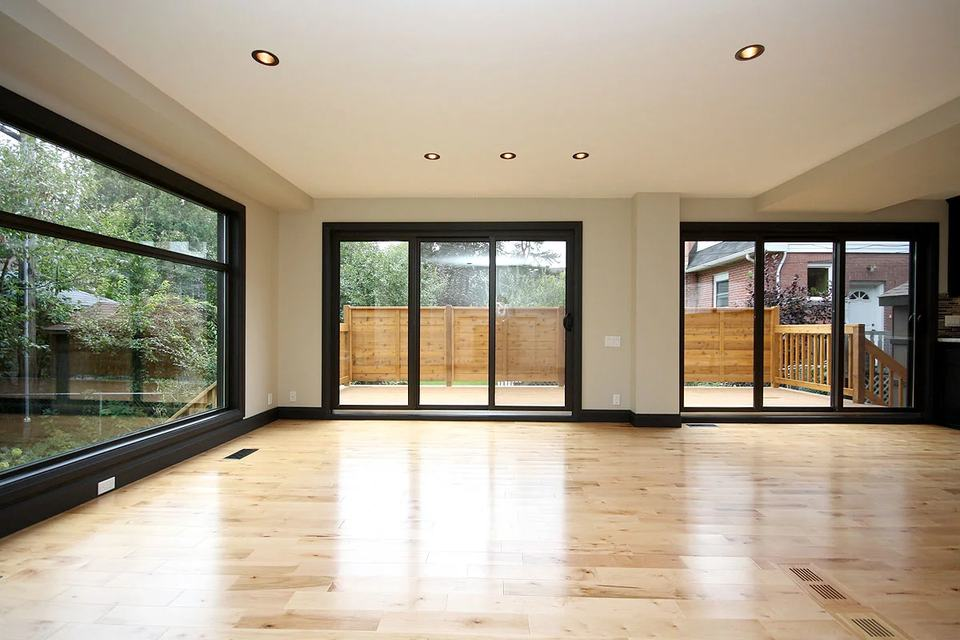
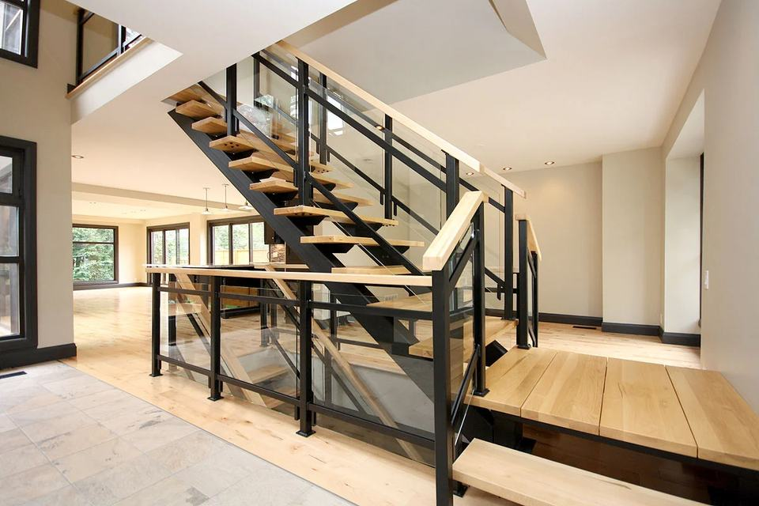
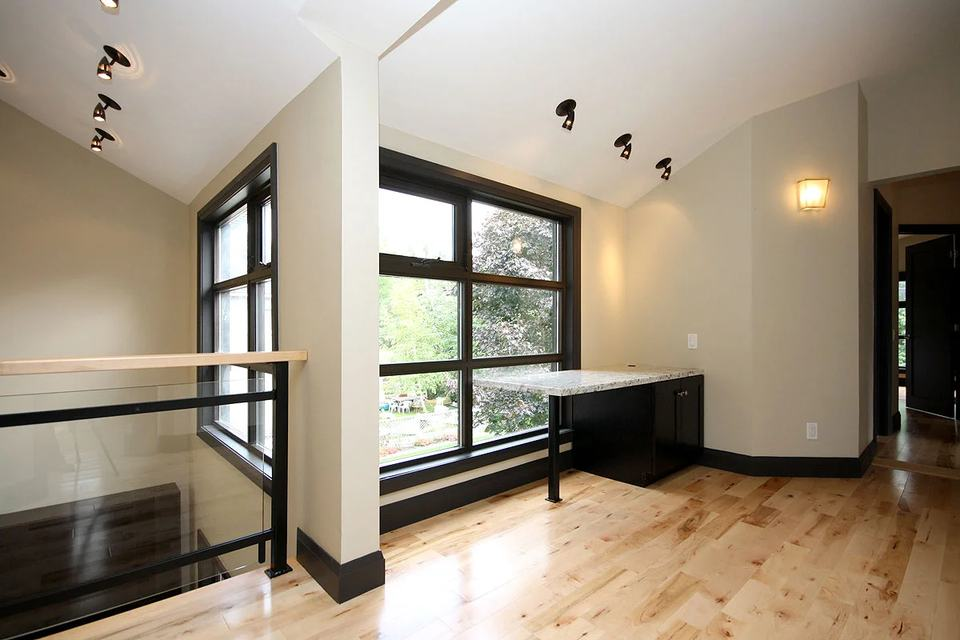

Residential · Ottawa · 2009
An addition and renovation in Rideau Gardens from 2009: an open living space opening to a deck, a new stair, and an upper landing with a built-in desk.



Interested in a similar build? info@blueprintbuilds.com